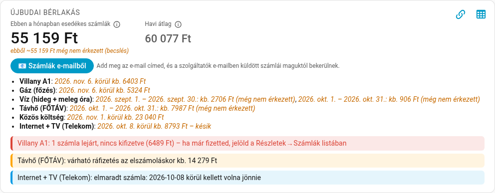
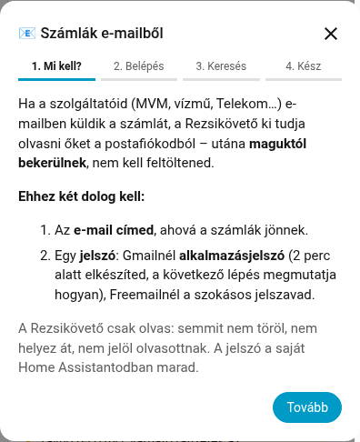
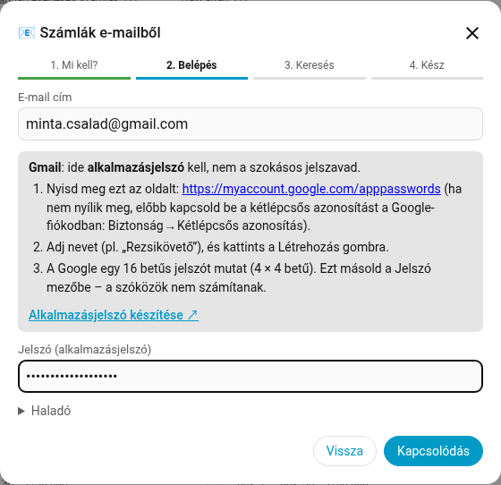
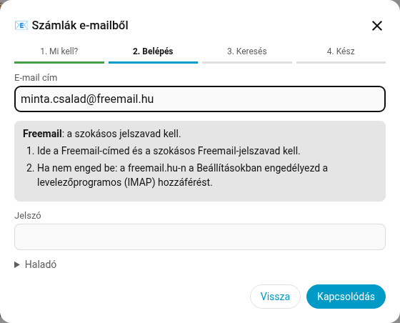
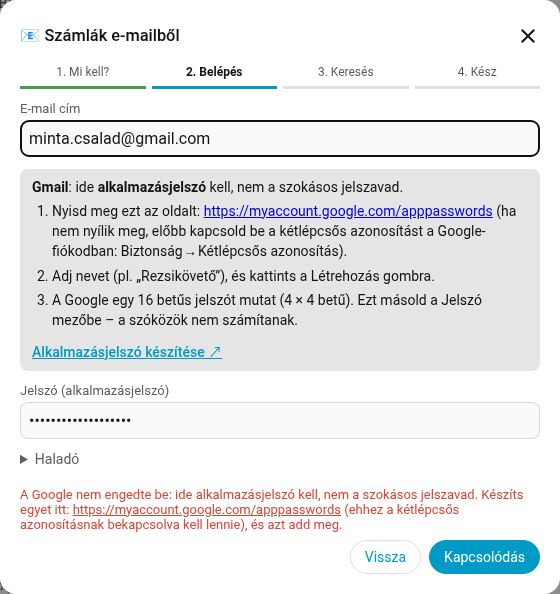
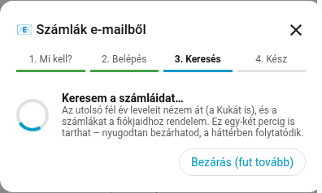
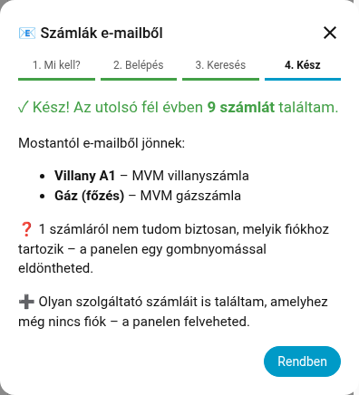
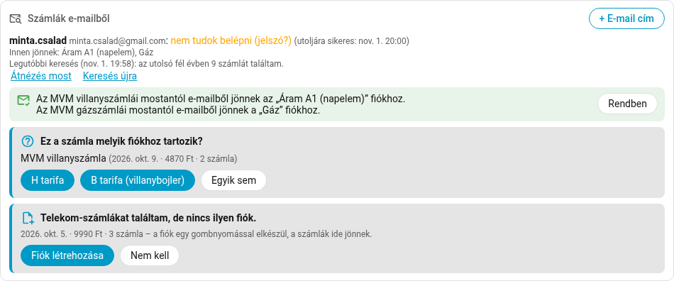
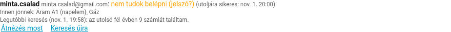
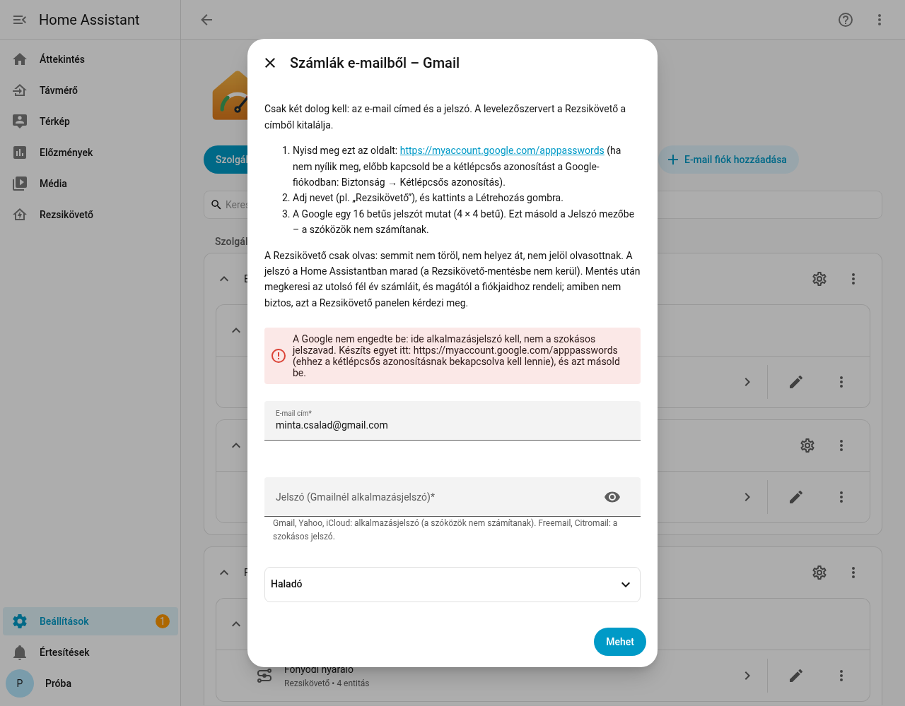

Lépésről lépésre – hogy a szolgáltatók e-mailben küldött számlái maguktól bekerüljenek a Rezsikövetőbe.
Nyugodt lehetsz: a Rezsikövető csak olvas – semmit nem töröl, nem helyez át, nem jelöl olvasottnak. A jelszó a saját Home Assistantodban marad.
A Gmail a levelezőprogramoknak nem fogadja el a szokásos jelszavad. Ezért kell egy alkalmazásjelszó:
abcd efgh ijkl mnop. Másold ki – csak egyszer látszik. A szóközök nem számítanak.Nincs külön jelszó: a szokásos jelszavad kell. Ha később nem enged be, a levelező honlapján, a Beállításokban engedélyezd a „levelezőprogramos (IMAP) hozzáférést”.
Outlook / Hotmail: a Microsoft jelszóval már nem engedi be a levelezőprogramokat. Állíts be ott továbbítást a számlalevelekről egy Gmail- vagy Freemail-címre, és azt add meg.
A Home Assistant bal oldali menüjében kattints a Rezsikövető pontra. Az otthonod összesítőjében kattints a 📧 Számlák e-mailből gombra.


Amint beírod a címed, a Rezsikövető felismeri a levelezőt, és megmutatja, milyen jelszó kell. Gmailnél gomb is van: Alkalmazásjelszó készítése ↗. Írd be a jelszót, és kattints a Kapcsolódás gombra.



A Rezsikövető belép, és átnézi az utolsó fél év leveleit (a Kukát is). Ez több percig is tarthat; a panel közben magától frissül, és kiírja, mióta fut. Nyugodtan bezárhatod – a háttérben folytatódik.

Megmutatja, hány számlát talált, és melyik fiókodhoz kötötte be. Innentől óránként magától megnézi a postafiókot.

A Rezsikövető a számla tartalma (mérő gyári száma, szolgáltató, közmű) alapján dönti el, melyik fiókhoz tartozik. Ha nem biztos, vagy olyan szolgáltatót talál, amelyhez még nincs fiókod, az összesítőben megkérdezi:

| Kártya | Mit tegyél? |
|---|---|
| ✉️ Zöld üzenet – „… mostantól e-mailből jönnek …” | Semmit. A Rendben eltünteti. |
| ❓ „Ez a számla melyik fiókhoz tartozik?” | Koppints a jó fiók nevére. Ha egyik sem, Egyik sem – többet nem kérdezi. |
| ➕ „… találtam, de nincs ilyen fiók” | Fiók létrehozása (internet/TV: egy gombnyomás; villany/gáz/víz: a fiók-varázsló előtöltve nyílik) – vagy Nem kell. |
| Mit látsz? | Mit tegyél? |
|---|---|
| „A Google nem engedte be: ide alkalmazásjelszó kell…” | A szokásos jelszót adtad meg. Készíts alkalmazásjelszót (1. lépés), és azt írd be. |
| „nem tudok belépni (jelszó?)” a panelen | A jelszó megváltozott, vagy a Google visszavonta (pl. Google-jelszócsere után). Készíts újat, majd: Beállítások → Eszközök és szolgáltatások → Rezsikövető → az otthon → az e-mail fiók → ⋮ → Újrakonfigurálás. |
| „Nem találtam a levelezőszerveredet” | A levelező súgójában keresd az „IMAP-szerver” nevét, és írd be a Haladó részbe. |
| Outlook / Hotmail: „jelszóval már nem enged be” | Továbbítás egy Gmail- vagy Freemail-címre, és azt add meg. |
| Freemail / Citromail nem enged be | A levelező honlapján, a Beállításokban engedélyezd az IMAP-hozzáférést. |
| „… levelet nem tudtam fiókhoz rendelni” | Ha van kérdés-kártya, válaszolj rá. Ha nincs: nézd meg a fiók mérőszámát (fiók beállításai → Mérő). |
| Visszaállítás után: „add meg újra a jelszót” | A mentés biztonsági okból nem tartalmazza a jelszót: Újrakonfigurálás, és írd be újra. |
| Semmi nem jön, hiba sincs | Nézd meg a szolgáltató ügyfélportálján, hogy kértél-e e-számlát, és melyik címre jön. |

Beállítások → Eszközök és szolgáltatások → Rezsikövető → E-mail fiók hozzáadása. Itt is csak a cím és a jelszó kell; a szerver a címből jön, a Haladó rész össze van csukva.

Rezsikövető 2.2.0 · A képek a Rezsikövető próba-rendszeréből készültek, kitalált adatokkal; a postafiók-keresés eredménye szimulált. A Freemail/Citromail IMAP-hozzáférésének engedélyezését a levelezők hivatalos súgójából nem tudtuk ellenőrizni – ha a leírás eltér, a levelező saját súgója a mérvadó.